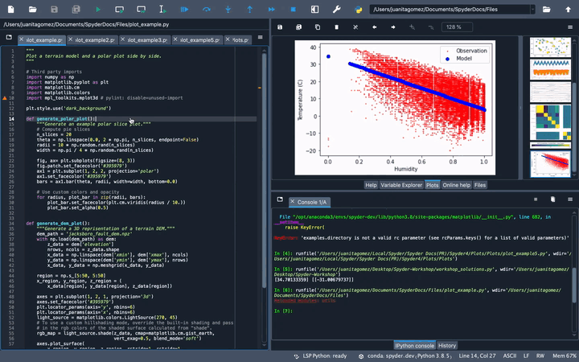

Plots#
The Plots pane shows the static figures and images created during your session. It will show you plots from the IPython Console, produced by your code in the Editor or generated by the Variable Explorer allowing you to interact with them in several ways.
The figures shown in the Plots pane are those associated with the currently active Console tab; if you switch consoles, the list of plots displayed (or none at all, if a new console) will change accordingly.

Options menu#
The options menu in the top right of the Plots pane offers several ways to customize how your plots are displayed.
Mute inline plotting#
The Mute inline plotting option is enabled by default, preventing your plots from appearing in the Console. If you deactivate this option, figures will display in both the Plots pane and the Console.

Show plot outline#
The Show plot outline option, off by default, shows a thin stroke surrounding the area of the figure area, which will also appear in the exported images.

Fit plots to window#
The Fit plots to Window option, also enabled by default, sizes the figures to match the pane. Disabling it will display plots at their native size, and allow you use the zoom buttons at the top of the pane to scale them manually.

Toolbar options#
The toolbar at the top of the Plots pane provides several useful features that allow you to interact with your figures. For example, you can cycle sequentially through the plot list with the forward and back arrows.

You can also save one or all the plots in the pane to file(s) by clicking the respective “save”/”save all” icons in the toolbar. Plots are rendered and saved as PNG by default, but SVG can be selected as an option under .

Additionally, if you want to use a figure in another document, you can click the “copy to clipboard” button and paste your plot wherever you want, such as a word processor.

Finally, you can use the “remove” and “remove all” buttons in the toolbar to clear plots from the list.